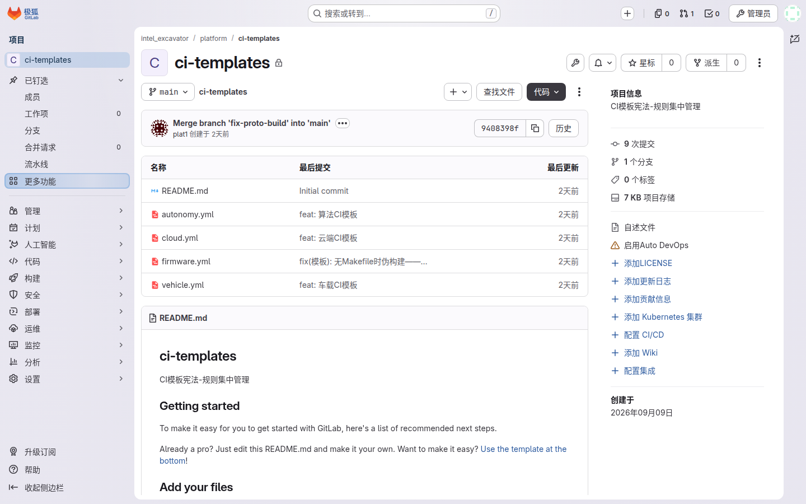
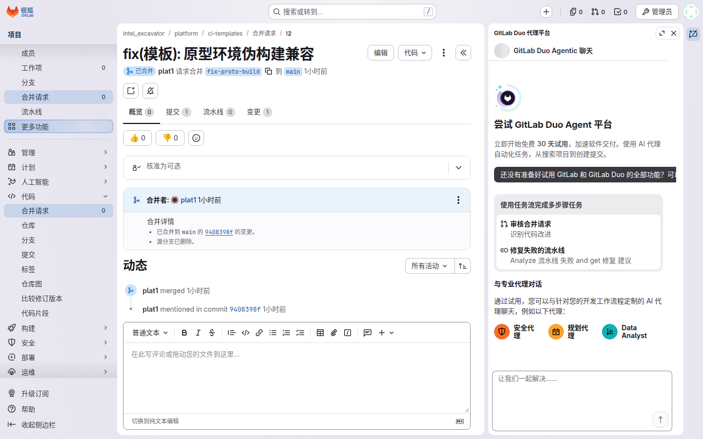
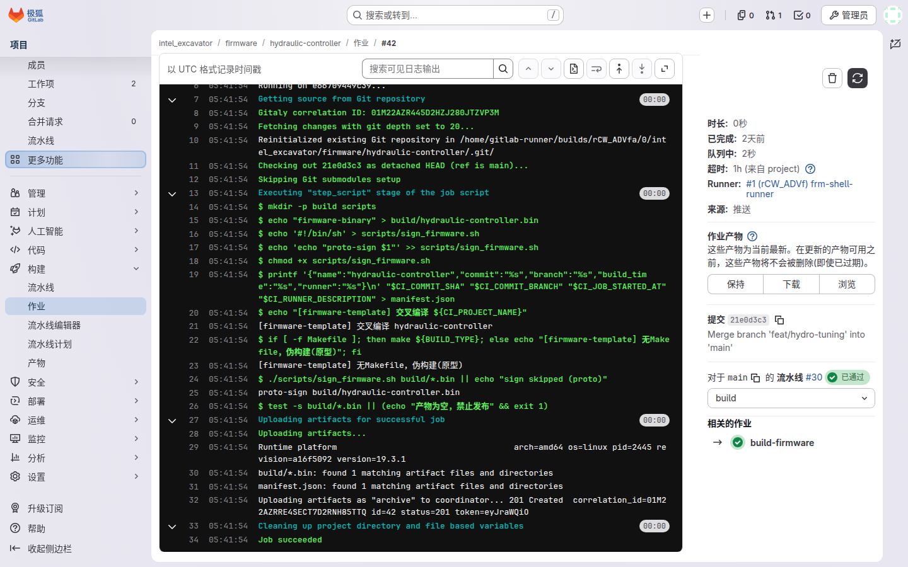
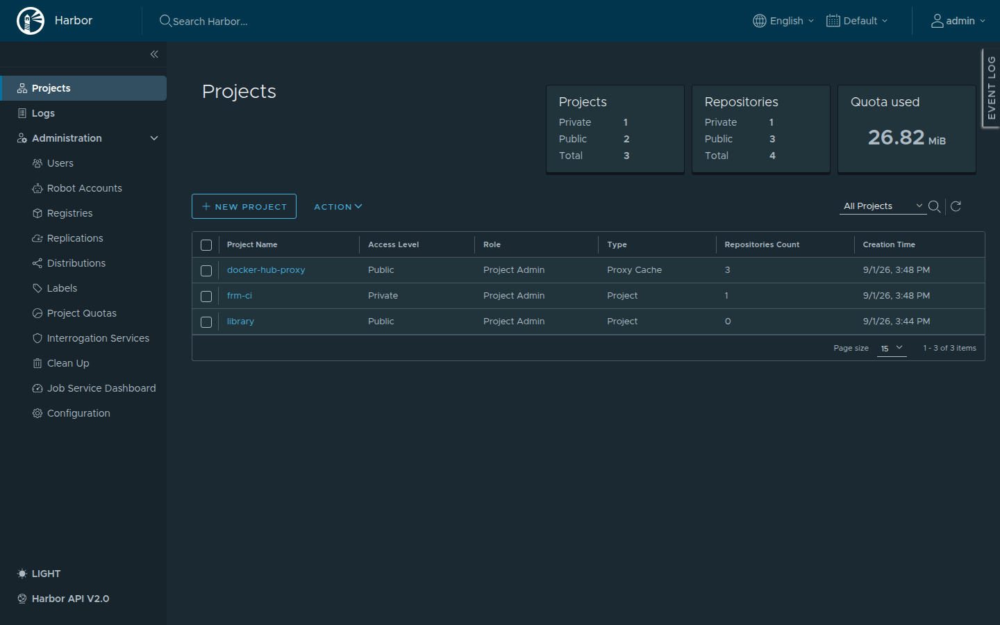
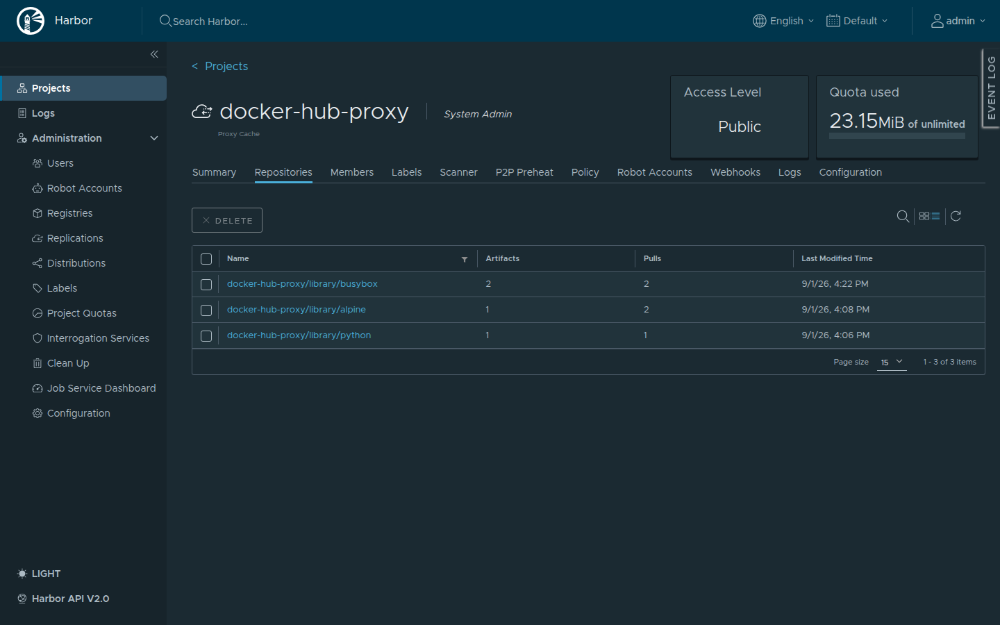
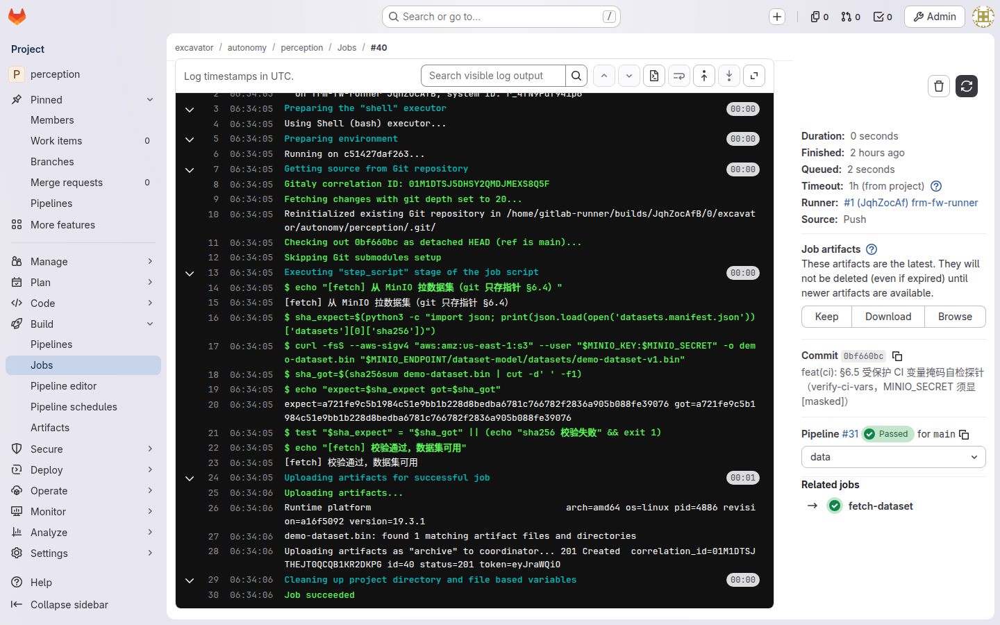

你是谁
你是这个项目的平台工程，在 GitLab 里的角色是 platform 组 Maintainer：管 platform/ci-templates——全项目 CI 规则的唯一来源，变更权只在本组（实测见测试计划 §7.3-5：firmware 维护者推本仓库被 403 拒绝）。连业务仓库的 Owner 都动不了模板——这不是不信任谁，而是把"规则怎么变"收拢成一条唯一的通道：MR + 评审。
你能做什么 / 不能做什么
| 能 ✅ | 不能 ❌ |
|---|---|
| 改 ci-templates 并走 MR 合入 | 直接改业务仓库的代码 |
| 管 runner 注册与标签 | 跳过 MR 直推 ci-templates 的 main |
| 管 Harbor 项目与 MinIO 桶策略 | 把 Harbor/MinIO 凭据写进仓库或教程 |
| 制定下游流水线准入规则 | 在业务仓库里单独给某个仓库开后门 |
典型任务流：一次模板变更的合入与传播验证
认识模板仓库
打开 platform/ci-templates，里面是四套业务模板和配套规范文档——全项目的流水线长什么样，由这里说了算。

改模板
和业务开发同款节奏：分支 → 修改 → push → MR。main 受保护，直推会被拒，一切变更走 MR。
$ git checkout -b fix/artifact-empty-check $ git push -u origin fix/artifact-empty-check

合入即全下游生效
下游各仓库的 .gitlab-ci.yml 里是 include + extends，模板改动无需任何下游仓库配合（§6.2）——你合入 MR 的那一刻，新规则就已经挂在所有人的流水线定义上了。
验证传播
随便挑一个下游仓库触发新流水线 → 打开 build job 看 Trace：出现模板新增的"产物为空，禁止发布"校验，即证明传播成功。

把规则写进准入
下游流水线不 include 通用层的 MR 不予合入（§6.2 制度 + 自检双保险）——制度上卡 MR 准入，自检上让流水线自己报错，两层兜底。
典型任务流：纳管镜像仓库与对象存储
二阶段（2026-09-01）把 Harbor（镜像仓库）和 MinIO（对象存储）接进了原型——这两件的基础设施也在你手上：建项目、配桶策略、把凭据安全地交给 CI。下面是配置到位后的全貌（设计 §6.4 产物归宿、§5.3 出口收敛、§6.5 密钥管理；验证证据见测试计划 §8）。
Harbor 两项目
Harbor 里建两个项目，分工不同：
- frm-ci——业务镜像直推区：CI 构建完镜像 push 进这里，再 pull 回 runner 验证（build→push→pull 回验，设计 §5.3）。
- docker-hub-proxy——代理缓存区：上游配
docker.1ms.run，构建区拉 base 镜像走这里而不直连外网。


MinIO 三桶
MinIO 起三个桶，对应三类大文件（设计 §6.4）：
- dataset-model——数据集与模型权重实体，git 里只存清单
datasets.manifest.json与 sha256 指针。 - field-dropzone——现场数据投放区，write-only 策略：现场只能往里投，不能删、不能列别人的。
- training-output——训练产物入库，配
manifest.json写 s3 指针，CI 凭它取回。

CI 凭据受保护 + 打码
Harbor robot account 与 MinIO access key 不进仓库，配成 GitLab 受保护变量（protected + masked）：只在受保护分支/标签的流水线里可见，job 日志里凭据一律显示 [MASKED]。

常见报错自救
extends: .firmware-template，让模板规则真正接管这个 job（§7.3-2）。
红线清单
延伸阅读
设计文档（docs/superpowers/specs/2026-08-31-excavator-code-management-design.md）：
- §6.2 三层模型
- §6.1 Runner 池
- §6.4 制品与镜像存储分工
- §5.3 交换条件（构建区出口收敛）
- §6.5 密钥管理
原型验收（docs/superpowers/specs/2026-08-31-excavator-prototype-test-plan.md）：
- §7.3 全部五条实测发现
- §8 第二阶段验证结果（Harbor/MinIO 九项全 ✅）